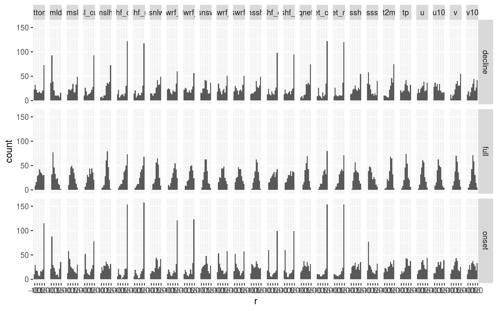
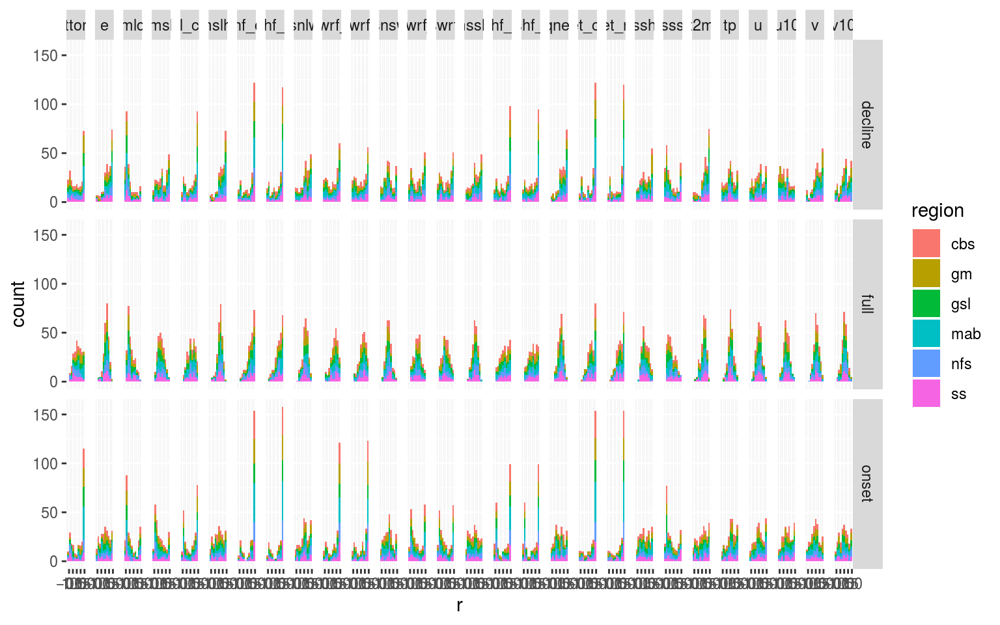
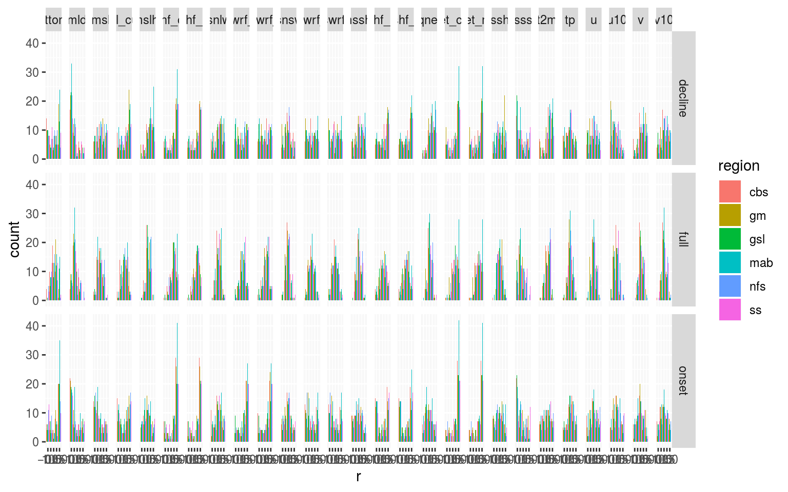

Last updated: 2020-04-22
Checks: 7 0
Knit directory: MHWflux/
This reproducible R Markdown analysis was created with workflowr (version 1.6.0). The Checks tab describes the reproducibility checks that were applied when the results were created. The Past versions tab lists the development history.
Great! Since the R Markdown file has been committed to the Git repository, you know the exact version of the code that produced these results.
Great job! The global environment was empty. Objects defined in the global environment can affect the analysis in your R Markdown file in unknown ways. For reproduciblity it’s best to always run the code in an empty environment.
The command set.seed(20200117) was run prior to running the code in the R Markdown file. Setting a seed ensures that any results that rely on randomness, e.g. subsampling or permutations, are reproducible.
Great job! Recording the operating system, R version, and package versions is critical for reproducibility.
Nice! There were no cached chunks for this analysis, so you can be confident that you successfully produced the results during this run.
Great job! Using relative paths to the files within your workflowr project makes it easier to run your code on other machines.
Great! You are using Git for version control. Tracking code development and connecting the code version to the results is critical for reproducibility. The version displayed above was the version of the Git repository at the time these results were generated.
Note that you need to be careful to ensure that all relevant files for the analysis have been committed to Git prior to generating the results (you can use wflow_publish or wflow_git_commit). workflowr only checks the R Markdown file, but you know if there are other scripts or data files that it depends on. Below is the status of the Git repository when the results were generated:
Ignored files:
Ignored: .Rhistory
Ignored: .Rproj.user/
Note that any generated files, e.g. HTML, png, CSS, etc., are not included in this status report because it is ok for generated content to have uncommitted changes.
These are the previous versions of the R Markdown and HTML files. If you’ve configured a remote Git repository (see ?wflow_git_remote), click on the hyperlinks in the table below to view them.
| File | Version | Author | Date | Message |
|---|---|---|---|---|
| Rmd | 2af28b4 | robwschlegel | 2020-04-22 | Re-built site. |
| Rmd | a6a35c9 | robwschlegel | 2020-04-22 | Push before taking a different approach with the base results table |
| Rmd | 005e31a | robwschlegel | 2020-04-22 | Added evaporation data |
| html | 99eda29 | robwschlegel | 2020-04-16 | Build site. |
| Rmd | e4b9586 | robwschlegel | 2020-04-16 | Re-built site. |
| Rmd | cc258d7 | robwschlegel | 2020-04-15 | Some notes from a meeting discussing this project. |
| Rmd | f963741 | robwschlegel | 2020-04-15 | Some text edits and published the shiny app |
| Rmd | d22d6a7 | robwschlegel | 2020-04-14 | Text edits |
| Rmd | 7c19a6f | robwschlegel | 2020-02-28 | Notes from meeting with Ke. |
| Rmd | c31db05 | robwschlegel | 2020-02-27 | Working on K-means analysis |
| Rmd | d1b59f4 | Robert William Schlegel | 2020-02-27 | Created a decent exploratory app |
| Rmd | 9057363 | robwschlegel | 2020-02-27 | First round of results are in. Beginning to create a shiny app to explore them more. |
| Rmd | bc9588e | robwschlegel | 2020-02-27 | Working on parallel calculation |
| Rmd | b10501e | robwschlegel | 2020-02-27 | Working on correlation code |
| Rmd | 10c69f8 | robwschlegel | 2020-02-26 | A few smol things |
| html | 50eb5a5 | robwschlegel | 2020-02-26 | Build site. |
| Rmd | 891e53a | robwschlegel | 2020-02-26 | Published site for first time. |
| Rmd | 3c72606 | robwschlegel | 2020-02-26 | More writing |
| Rmd | bcd165b | robwschlegel | 2020-02-26 | Writing |
| Rmd | c4343c0 | robwschlegel | 2020-02-26 | Pushing quite a few changes |
| Rmd | 80324fe | robwschlegel | 2020-02-25 | Adding the foundational content to the site |
This vignette will walk through the thinking and the process for how to link physical variables to their potential effect on driving or dissipating MHWs. The primary source that inspired this work was Chen et al. (2016). In this paper the authors were able to illustrate which parts of the heat budget were most likely driving the anomalous heat content in the surface of the ocean. What this analysis seeks to do is to build on this methodology by applying the fundamental concept to ALL of the MHWs detected in the NW Atlantic. Fundamentally we are running thousands of correlations between SST anomalies and the cooccurrent anomalies for a range of physical variables. The stronger the correlation (both positive and negative) the more of an indication this is to us that these phenomena are related.
# All of the libraries and objects used in the project
# Note that this also loads the data we will be using in this vignette
source("code/functions.R")We know when the MHWs occurred, and our physical data are prepped, so what we need to do is run correlations between SST from the start to peak and peak to end of each event for the full suite of variables. This will show us for each event which values correlated the best for the onset AND decline of the events. We’ll also run correlations on the full time series.
# Extract just the event info
GLORYS_MHW_event_index <- GLORYS_MHW_event %>%
select(event_no, region, season) %>%
ungroup() %>%
mutate(row_index = 1:n())
# Run all the stats
ALL_cor <- plyr::ddply(GLORYS_MHW_event_index, .parallel = T,
.variables = c("row_index"), .fun = cor_all) %>%
left_join(GLORYS_MHW_event_index, by = "row_index") %>%
select(region, season, event_no, ts, var, n, r, rmse) %>%
arrange(region, event_no)
# Save
saveRDS(ALL_cor, "data/ALL_cor.Rda")
saveRDS(ALL_cor, "shiny/ALL_cor.Rda")Seeing as how we’re just running correlations at the moment (I snuck RMSE into the above calcs as well) everything runs pretty quickly. With the method sorted for now we need to have a look at the results. What we have at the moment is a long dataframe containing the correlations of different variables with the temperature anomaly. It must be pointed out that these are for the same day, there is no time lag introduced, which may be important. Below we are going to visualise the range of correlations for each variable to see how much each distribution is skewed. This skewness could probably be quantified in a meaningful way… but let’s look at the data first.
# Load data
ALL_cor <- readRDS("data/ALL_cor.Rda")
# Histogram grid of variable by time series part
ggplot(filter(ALL_cor, var != "temp"), aes(x = r)) +
geom_histogram(bins = 10) +
facet_grid(ts ~ var)
| Version | Author | Date |
|---|---|---|
| 99eda29 | robwschlegel | 2020-04-16 |
# Stacked histogram
ggplot(filter(ALL_cor, var != "temp"), aes(x = r)) +
geom_histogram(aes(fill = region), bins = 10) +
facet_grid(ts ~ var)
| Version | Author | Date |
|---|---|---|
| 99eda29 | robwschlegel | 2020-04-16 |
# Dodged histogram
ggplot(filter(ALL_cor, var != "temp"), aes(x = r)) +
geom_histogram(aes(fill = region), bins = 5, position = "dodge") +
facet_grid(ts ~ var)
| Version | Author | Date |
|---|---|---|
| 99eda29 | robwschlegel | 2020-04-16 |
# Boxplots of r values based on seasons or regions
## See shiny appWe also want to filter by p-value to highlight the strong correlations.
Wow! What a surprise. There are some really clear patterns coming through in the data. In particular SSS seems to be strongly related to the onset of MHWs. There are a lot of nuances in these data and so I think this is actually an example of where a Shiny app is useful to interrogate the data.
In the shiny app it also comes out that the longer events tend not to correlate strongly with a single variable. This is to be expected and supports the argument that very persistent MHWs are supported by a confluence of variables. How to parse that out is an interesting challenge.
# source("shiny/app.R")
# Or it is live here:
# https://robert-schlegel.shinyapps.io/MHWflux/Below is a chunk of code I’ve just thrown up to look at specific events with the naked eye. I still need to create a convenience function that can pull out a chosen event and plot the variables as a scatterplot and time series so it is easy to see what exactly the direction of the correlations means.
# gm 32
# Get the info for the focus event
event_sub <- GLORYS_MHW_event %>%
filter(event_no == 15,
region == "gm")
# Subset the time series for the onset and decline portions
ts_temp <- ALL_anom_full %>%
filter(t >= event_sub$date_start,
t <= event_sub$date_end,
region == event_sub$region,
var == "temp") %>%
dplyr::rename(temp_anom = anom) %>%
select(region, t, temp_anom)
ts_full <- ALL_anom_full %>%
filter(t >= event_sub$date_start,
t <= event_sub$date_end,
region == event_sub$region) %>%
left_join(ts_temp, by = c("region", "t"))# %>%
# filter(var == "temp")
# Time series plot
# ggplot(data = filter(ts_full, var %in% c("msshf", "temp")), aes(x = t, y = anom)) +
# geom_line(aes(colour = var))
# Wide test data
ts_wide <- ts_full %>%
dplyr::select(-temp_anom) %>%
pivot_wider(names_from = var, values_from = anom) %>%
filter(t >= event_sub$date_peak)
# filter(t <= event_sub$date_peak)
# Scatterplot
plotly::ggplotly(ggplot(data = ts_wide, aes(x = qnet_cum, y = temp)) +
geom_smooth(method = "lm") +
geom_point(aes(colour = t)))With the correlations calculated for the onset, decline, and full extent of each MHW, we also want to know if any signals emerge from the regions and/or seasons of occurrence of these events. Is the relationship between SSS and MHW onset stronger in the winter? Stronger in certain region? I’m thinking a linear model may be the way to go on this.
Having manually looked through the Shiny app it does look like there are some patterns. These will be written down in the table below.
Now that all of the patterns have been pulled out by region and season, we want to see if there are any relationships between MHWs that show strong correlations at onset with a particular variables and strong correlations at decline with another. We will look for this within regions and seasons as well. For example, do MHWs that correlate well with an increase in SSS also correlate well with a decrease in long-wave radiation during the decline of the event? I’m not sure how best to go about this in a clean manner. I’ll have to think of something clever.
One possibility could be to look at correlations between r values themselves. And to do so by region + season. It may also work to just directly correlate different values with one another. See if any patterns come out by region and/or season.
In the following table a more concise summary of the results is presented.
| variable | abbreviation | onset | full | decline | season | region | overall | story |
|---|---|---|---|---|---|---|---|---|
| Air temperature | t2m | Even throughout | Slight positive | Strong positive | Autumn always strong positive for decline. Spring decline has large range. | Stronger positive for GSL and MAB. | Much clearer relationship for decline than onset. | TRUE |
| Total precipitation | tp | Normal with slight positive | Normal distribution | Even throughout | Autumn and Winter slightly more positive with Spring decline usually negative. | Nothing clear. SS and NFS decline most often r ~= 0. | Meh. | FALSE |
| Total evaporation | e | Even throughout | Normal distribution | Strong positive | Spring is the only season that isn’t mostly positive for decline. | SS is the only region not mostly positive for decline. | Important for the decline of events, except often in Spring. | TRUE |
| Air Northerly | v10 | Three hump | Normal distribution | Three hump | Large spread for all seasons with Autumn tending towards positive for onset and decline. | Not much difference. NFS tends a bit more towards positive onset and decline than others. | There are some signals in there, but they are not clear. | FALSE |
| Air Easterly | u10 | Slight positive | Normal distribution | Slight negative | Least amount of range in Autumn onset. | GM tends to have the least range and be the most negative for onset and decline. | Slight positive onset and slight negative decline imply this vaguely shows a thermal gradient. | FALSE |
| Mean sea level pressure | msl | Strong negative with positive tail | Slight negative to normal | Even with positive tail | Autumn is much more negative for onset and decline. Spring and Summer onset tend positive. | GM and NFS more positive for decline. | Decrease in MSLP is often important for the onset of events | TRUE |
| Mean sea level pressure (cumulative) | msl_cum | Strong negative and positive | Normal but flat | Strong positive with small negative tail | Full range in onset and decline for all seasons except positive Spring onset. Autumn onset tends negative. | Full range for all. GM decline tends positive. CBS onset tends negative, NFS and SS onset tend positive. | Stronger signals than for MSLP non-cumulative. | TRUE |
| Sea surface height | ssh | Even throughout | Slight negative | Positive tail | Autumn onset and decline tend negative. | GM decline positive. | The strong positive signal for decline implies a height anomaly (i.e. an eddy) leaving the area. | TRUE |
| Current Northerly | v | Normal but flat | Normal distribution | Positive with small negative tail | Not much difference. Winter onset tends more negative. | GM onset and decline tend more positive. | Meh. | FALSE |
| Current Easterly | u | Normal with positive tail | Normal distribution | Slight three hump | Autumn decline tends positive while Summer tends negative. | NFS onset tends most positive. | Possibly something there for onset of events in NFS. | FALSE |
| Sea surface salinity | sss | Strong negative with positive tail | Negative | Strong negative with positive tail | Summer then Autumn tend more negative. Largest range on Winter. | GSL much more negative for onset+full+decline. CBS onset strong negative. GM decline strong negative. | Strong negative mixed in with noise. Large differences between regions. | TRUE |
| Mixed layer depth | mld | Strong negative with positive tail | Negative | Strong negative with minor positive tail | Strong negative decline for all but Summer. Summer onset negative with large Spring and Winter range. | Strong negative for all but CBA and SS with large range. All negative onset but large ranges. | The decline of a MHW in Summer or the onset in Winter + Spring doesn’t seem as tied to MLD. | TRUE |
| Bottom temperature | bottomT | Strong positive with minor negative tail | Normal but flat | Strong positive with small negative tail | Large ranges with strong positive Autumn onset. | Strong positive onset for MAB + GM. CBS decline tends negative. | MHWs in Autumn generally have high bottom temps at onset | TRUE |
| Latent heat flux | mslhf_mld | Strong positive | Positive | Strong positive | Very strong positive onset+full+decline for Autumn. Large range in onset+decline in Spring. | Strong positive onset for MAB. | This variable is almost always important for onset and decline, especially in Autumn. | TRUE |
| Sensible heat flux | msshf_mld | Strong positive with negative tail | Flat | Strong positive with minor negative tail | Strong positive onset for Autumn + Winter and negative for Spring + Summer. | Some difference in tendency but similar ranges for all regions. | Very large differences in negative or positive correlations based on seasons. | TRUE |
| Longwave radiation | msnlwrf_mld | Strong positive with minor negative tail | Slight positive | Flat with positive tail | Positive onset tendency with Autumn much stronger. Spring + Summer decline tend negative. | Strong positive onset for MAB + GM. | Autumn may be significantly different from Spring. | TRUE |
| Shortwave radiation | msnswrf_mld | Negative with strong positive tail | Slight negative | Positive and negative | Strong negative onset for Autumn. Large range for everything else. | Strong negative onset for GM but largest spread for MAB. | A decrease in SWR in Autumn leads to MHWs, implying cloud cover or some other LHF mechanism. | TRUE |
| Net heat flux | qnet_mld | Very strong positive | Positive | Strong positive with minor negative tail | Autumn has strongest positive onset+full+decline. Spring decline has large range with negative tendency. | MAB strong positive onset + decline. All others tend positive with larger range in decline for GM. | All regions and seasons tend strong positive but with some notable otliers. | TRUE |
With a table organised by each variable, it makes sense to also create a table organised by season, and another by region.
The deepening of the MLD with MHW onset may be due to wind mixing into the deeper warmer water during winter.
Look into the relationship between MSLP and MHW onset. It is odd.
Look into relationship between decrease in SSS with decline and also decrease in latent heat flux/ evaporation.
From Chen et al. 2016 (JGR) Such an extreme event in the MAB was attributed to the anomalous atmospheric forcing, which was linked to the northward shift in the jet stream position [Chen et al., 2014a, 2015]. The anomalously warm atmospheric conditions in the winter of 2011–2012 increased the ocean heat content (increased the ocean heat content anomaly) and facilitated the extreme warm ocean temperature in spring 2012 [Chen et al., 2014a, 2015]. On the other hand, the ocean advection played a secondary role, which partially damped the heat content anomaly created by the air-sea heat flux [Chen et al., 2015]. In both cases, initial temperature and ocean advection are not sufficient to describe the seasonal mean temperature. Additional cooling (warming) in addition to ocean advection is needed to further describe the winter (spring) temperature. In comparison, using the sum of the initial temperature and air-sea flux yields a much better description of seasonal mean temperatures (Figures 5c and 5f) While the overall role of ocean advection is smaller than that of air-sea flux in determining the winter and spring temperatures, the year-to-year changes in the relative importance is worth investigating. Normally, given anomalous initial temperature, air will act to damp the temperature anomaly, as in winter 2007 or 2011, or even 2005 to some extent. However, in winter 2012, the air continued to increase the temperature anomaly. Out of the 12 years 2003–2014, the air-sea flux normally dominated the temperature anomaly in the MAB during winter. In only 3 years was the winter time temperature anomaly primarily controlled by ocean advection. For spring, ocean advection has more control on the temperature anomalies than air-sea flux does, although the difference is smaller (Table 2). In both seasons, the relative importance of air-sea flux and ocean advection does not seem to be related to either the initial or seasonal mean thermal condition of the shelf water (fourth and fifth columns of Tables 1 and 2). The correlation coefficients increase from 0.66 in the first half of February to 0.91 in the second half of March. This suggests that estimation of spring temperature anomaly in the MAB based on the thermal condition 2 months before spring is statistically possible. This suggests that more northerly jet stream positions result in larger heatflux from the atmosphere into the ocean in the MAB. This is likely due to warmer and more humid air overlying the continental shelf, which reduces the heat loss from the ocean during the cooling seasons [Chenet al., 2014a]. In spring and summer, the air-sea flux may be less correlated with the air temperature due to the shallowness of the surface mixed layer, and thus may be disconnected from large-scale atmospheric circulation, i.e., jetstream variability.
Chen, K., Kwon, Y.-O., and Gawarkiewicz, G. (2016). Interannual variability of winter-spring temperature in the middle atlantic bight: Relative contributions of atmospheric and oceanic processes. Journal of Geophysical Research: Oceans 121, 4209–4227.
sessionInfo()R version 3.6.3 (2020-02-29)
Platform: x86_64-pc-linux-gnu (64-bit)
Running under: Ubuntu 16.04.6 LTS
Matrix products: default
BLAS: /usr/lib/openblas-base/libblas.so.3
LAPACK: /usr/lib/libopenblasp-r0.2.18.so
locale:
[1] LC_CTYPE=en_CA.UTF-8 LC_NUMERIC=C
[3] LC_TIME=en_CA.UTF-8 LC_COLLATE=en_CA.UTF-8
[5] LC_MONETARY=en_CA.UTF-8 LC_MESSAGES=en_CA.UTF-8
[7] LC_PAPER=en_CA.UTF-8 LC_NAME=C
[9] LC_ADDRESS=C LC_TELEPHONE=C
[11] LC_MEASUREMENT=en_CA.UTF-8 LC_IDENTIFICATION=C
attached base packages:
[1] stats graphics grDevices utils datasets methods base
other attached packages:
[1] tidync_0.2.3 heatwaveR_0.4.2.9001 lubridate_1.7.4
[4] forcats_0.5.0 stringr_1.4.0 dplyr_0.8.4
[7] purrr_0.3.3 readr_1.3.1 tidyr_1.0.2
[10] tibble_2.1.3 ggplot2_3.2.1 tidyverse_1.3.0
loaded via a namespace (and not attached):
[1] httr_1.4.1 jsonlite_1.6.1 viridisLite_0.3.0 foreach_1.4.4
[5] modelr_0.1.6 assertthat_0.2.1 highr_0.8 cellranger_1.1.0
[9] yaml_2.2.1 pillar_1.4.3 backports_1.1.5 lattice_0.20-35
[13] glue_1.3.1 digest_0.6.25 promises_1.1.0 rvest_0.3.5
[17] colorspace_1.4-1 htmltools_0.4.0 httpuv_1.5.2.9000 plyr_1.8.5
[21] pkgconfig_2.0.3 broom_0.5.5 haven_2.2.0 scales_1.1.0
[25] whisker_0.4 later_1.0.0 git2r_0.26.1 generics_0.0.2
[29] farver_2.0.3 withr_2.1.2 lazyeval_0.2.2 cli_2.0.2
[33] magrittr_1.5 crayon_1.3.4 readxl_1.3.1 evaluate_0.14
[37] fs_1.3.1 ncdf4_1.17 fansi_0.4.1 doParallel_1.0.15
[41] nlme_3.1-137 xml2_1.2.2 tools_3.6.3 data.table_1.12.8
[45] hms_0.5.3 lifecycle_0.1.0 plotly_4.9.2 munsell_0.5.0
[49] reprex_0.3.0 compiler_3.6.3 RNetCDF_2.1-1 rlang_0.4.5
[53] grid_3.6.3 iterators_1.0.10 rstudioapi_0.11 htmlwidgets_1.5.1
[57] labeling_0.3 rmarkdown_2.1 gtable_0.3.0 codetools_0.2-15
[61] DBI_1.0.0 reshape2_1.4.3 R6_2.4.1 ncmeta_0.2.0
[65] knitr_1.28 workflowr_1.6.0 rprojroot_1.3-2 stringi_1.4.6
[69] parallel_3.6.3 Rcpp_1.0.3 vctrs_0.2.3 dbplyr_1.4.2
[73] tidyselect_1.0.0 xfun_0.12